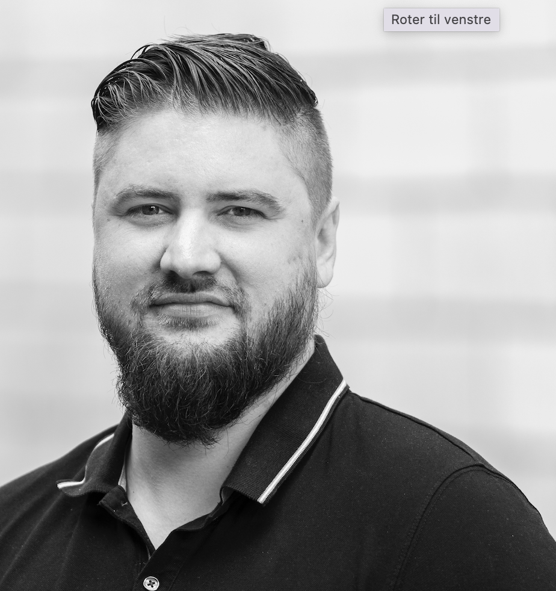

Resumé

Kenni Jakobsen
Summary
Kenni Jakobsen, a 35-year-old Project Manager/Scrum Master, i am passionate about bridging the gap between project management and programming. With a desire to delve into the technical side of things, i am embarking on a journey to explore programming.
In addition to professional pursuits, I enjoy a fulfilling personal life. I reside in Odense with a loving partner and our three daughters.
Education
- Public school - Kroggaardsskolen
- Formal education - SDE, IT-support
- Courses
- UCL, Management Courses
- IBC, Project Management Courses
Work experience
- 2014-2016 - FlexyBox ApS: IT-Support Trainee
- 2016-2017 - FlexyBox ApS: IT-Supporter
- 2017-2019 - FlexyBox ApS: Customer Success Manager
- 2019-2022 - FlexyBox ApS: Head of Customer Success
- 2022-2022 - FlexyBox ApS: Senior CRM & Onboarding Specialist
- 2022-2023 - POS-ONE A/S: Project Success Manager
- 2023- - POS-ONE A/S: Project Manager / Scrum master
Skills
My communicative and planning skills are my best assets in my daily job.
- Communication
- Coaching
- Project management
- Customer Service